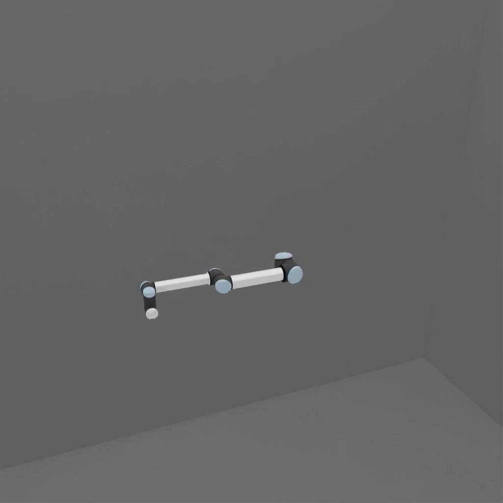

full_range_sweep (FET022 Driven Joints)#
Property |
Value |
|---|---|
Test name |
full_range_sweep |
Feature(s) |
|
Engine |
Kit / Isaac Sim (>=2024.2.0) |
Test version |
1.5.6 |
Wall-clock timeout |
14400 seconds |
Native Velocity Defaults#
A selected physical revolute joint’s native rad/s ceiling is unavailable as a timing hint when it matches the SDK float32-maximum degree/s default converted to radians/s, including float32 rounding. Ordinary authored ratings, linear coordinates and unknown units retain their values. Without a meaningful hint, the existing configured timing fallback applies; no physical ceiling is invented. This can change planned ramp duration without changing response tolerances or the required execution budget.
Summary#
Commands each non-passive, non-mimic-follower joint through upper/lower targets inset from its imported runtime range and back to the configured zero/rest target. It checks the sampled endpoint-hold windows, zero return, and bounding-box stability.
Optional Motion Evidence#
An optional frs_joint_NNN history records measured position, the actual
per-step position command (target), the segment destination (final_goal),
and command-minus-position error. These are distinct during the ramp. Named
upper/lower/zero ramp and hold phases share one cumulative per-joint clock.
Joint metadata identifies radians for revolute tensor readbacks. Prismatic
tensor scaling is not yet qualified, so those channels remain unknown_native
even when joint identity resolves; stage meters-per-unit is context, not proof
of tensor units. Raw USD body/bounding-box distances remain stage lengths.
History context runtime_lower / runtime_upper records the actual
RobotHandle.get_joint_position_limits() readback in native joint coordinates,
not raw authored USD limits (which use degrees for revolute joints and stage
length for prismatic joints). Older unreleased histories used the misleading
keys authored_lower / authored_upper for these same runtime values; do not
interpret those keys as raw USD data or apply a second degrees-to-radians conversion.
Time is estimated from observed physics steps and configured physics_fps;
setup, reset, and capture/render ticks are excluded. Captures reference the
preceding retained observation, not an exact video-frame/solver-step mapping.
The recorder retains at most 4096 observations per history, normally every
fourth sample plus phase changes. Recording and optional readback failures mark
evidence partial and warn without changing controls or finite response criteria.
Unavailable or invalid required endpoint/state readbacks are setup/runtime errors. Runners
without the motion API still execute normally and add no diagnostic readbacks.
Verdict configuration is checked before initial settling or joint commands:
rest_tolerance and zero_return_tolerance must be finite nonnegative real
numbers, and bbox_explode_ratio must be finite and positive. Boolean/string
coercions, NaN and infinity are rejected as configuration errors, not asset
verdicts. Exact zero tolerances remain supported. Sweep margins and range caps
are likewise checked before motion; finite non-positive caps still disable
capping.
rest_check_enabled and rest_check_fatal must be actual booleans: values
such as null, zero or an empty string cannot silently disable endpoint checks.
Explicit false remains available for deliberately diagnostic runs and does
not provide the default conformance guarantee.
Required Runtime State#
Missing, non-finite or wrong-shaped runtime state needed by control or the verdict stops the test as a setup/runtime error, not conformance PASS or an evaluated asset-response FAIL. Optional extra motion readbacks remain nullable and can mark diagnostic evidence partial. Response tolerances and configured failure policies are independent of optional recording.
Spatial Safety Observation#
The safety guard compares required finite live articulation geometry with a
frozen setup reach reference derived from owned body geometry, joint-anchor
offsets and bounded prismatic travel, when that topology can be qualified.
The configured volume-margin factor is applied as its cube root to this span;
ordinary bending from a slender initial pose is not judged against that pose’s
small volume. Unsupported topology retains an explicitly unqualified initial
volume proxy. frs_guard_reference records the basis and qualification;
frs_guard_abort retains a detected guard interruption when diagnostics
are available. Raw initial-box metrics remain observations, not the qualified
reach reference.
A guard trip interrupts execution as a runtime/setup error with incomplete response coverage, not an evaluated joint/target failure or an asset-defect diagnosis. Required geometry errors also propagate; optional diagnostic persistence cannot disable the guard or replace its original cause. Inspect completed observations/timing records where supplied, rather than assuming all planned motion ran. No extra physics steps or acceptance tolerances are introduced; native qualification of the reported asset remains separate.
What Pass Guarantees#
A passing result under the default fatal rest checks confirms that every tested
joint stays within tolerance for at least half of each configured hold window,
returns to its legal zero/rest target within tolerance, and does not trigger the sampled
bounding-box explosion check. Upper/lower targets use sweep_margin_ratio
(default 10 percent inset), and a range wider than max_sweep_range is capped.
The default cap is exactly 2*pi radians (math.tau) for revolute joints.
The cap is expressed in native joint coordinates; it is not a degree-valued
USD authoring limit. A genuinely capped interval prefers zero as its center,
then shifts that entire interval inside the imported legal lower/upper limits.
It never extends the interval past either limit, including for offset ranges.
A relative tolerance of one part per million at the cap boundary preserves
full-turn ranges imported as float32 or plans using the older 2*3.14159 cap.
For example, an imported [-90, +270] degree-equivalent range produces
[-54, +234] degree-equivalent destinations with the default 10 percent inset,
not [-144, +144]. Non-positive finite caps disable capping. Parameter
construction for a selected joint rejects invalid/reversed or non-finite limits,
non-finite caps, and margins outside [0, 0.5) as setup/configuration errors,
not evaluated asset failures. Initial joint selection still excludes missing,
non-finite or insufficient ranges as described below.
The rest target is zero if zero is inside the imported runtime range; otherwise it is
inset from the nearest bound. The test does not prove contact with exact authored limit endpoints or
continuous tracking between observations.
What It Checks#
The test drives each non-passive, non-mimic-follower joint individually from
its settled starting position between its configured inset targets. The sweep commands the joint to its upper
target, then to its lower target, and finally back to its configured rest target. At each waypoint, the
test measures the actual joint position and compares it to the commanded position.
A joint fails if it cannot reach and hold either commanded range endpoint within
rest_tolerance (default 0.10 native joint units) for at least half of the pause window, cannot return
to the legal zero/rest target within zero_return_tolerance (default 0.01 native
joint units, radians only for qualified revolute readbacks). A spatial safety
guard interruption leaves incomplete execution, not a failed arrival/hold
criterion. bbox_explode_ratio retains its default volume-margin factor of 10.
rest_check_fatal defaults to true; setting
it to false is reserved for explicitly diagnostic, non-conformance runs.
How It Works#
Each joint is swept in isolation. The test drives the joint to its inset upper target at
a speed scaled by sweep_speed_scale (default 0.8), pauses for
pause_at_limits_seconds (default 0.15 s), then drives to its inset lower target, pauses
again, and returns to its zero/rest target. The raw initial bounding box and
qualified setup reach reference are frozen before the sweep begins. Required
live geometry is checked against the applicable safety basis. A trip stops
observation with incomplete execution and retained cause; it cannot become
aggregate joint non-convergence. Inspect the reference qualification, live
geometry and completed work before attributing ownership.
Joints without a finite imported lower/upper range wider than 1e-3 native
joint units are skipped. Passive, mimic-follower and identified loop joints
are excluded from the sweep; this result does not
prove their range compliance. These Core bindings cover PhysX/Isaac; Newton’s
independently owned provider has its own actuator and final-convergence policy.
Velocity-Aware Timing#
Version 1.5.1 computes each ramp from its distance and an optional speed hint,
preserving the same destinations, evaluated hold windows, and tolerances.
The ramp is at least the existing fallback duration (1 / max(0.1,
sweep_speed_scale), 1.25 simulation seconds with the default 0.8).
With a meaningful speed hint, it is also at least the profile’s peak derivative
times the larger of planned travel and travel from the current required live
position, divided by speed times min(1, sweep_speed_scale), plus
sweep_settling_allowance_seconds (default 0.25). The peak factors are 1 for
linear/unknown profiles, 1.5 for smoothstep, 1.875 for smootherstep, and 2 for
trapezoidal. Derived durations round up to complete physics ticks. The extra
allowance is a configurable response allowance, not a measured acceleration.
Every ramp starts from the required live observed position, not the preceding
requested endpoint. A missed preceding endpoint therefore cannot introduce a
stale-target jump at the next segment. Timing evidence records requested_start
separately from observed_start; the destination and evaluated hold criterion
remain unchanged. Commands remain inside the imported legal stops. If an
out-of-range starting pose requires a first legal command faster than the
qualified speed allowance, execution stops before commands as a setup/timing
error, not an evaluated asset failure. Missing hints provide no pacing guarantee.
The smaller usable native or qualified authored hint determines timing.
Native joint distance divided by native joint speed yields seconds without
guessing a linear unit conversion. USD fallback requires one uniquely resolved
revolute joint: explicit physxJoint:maxJointVelocity, matching angular
physxJointAxis, or matching angular performance-envelope velocity values
convert from degrees/second to radians/second once. Core’s prismatic tensor
scale remains unqualified, so raw USD linear speed is not substituted for a
missing native hint. Missing, zero, negative, nonfinite, malformed optional
ceilings and the narrowly rounded float32-max SDK unlimited sentinel use the
bounded configured fallback. A present velocity getter’s exception propagates;
required position errors remain execution errors.
For a 240-degree reversal with a 36 degrees/second hint, the default smoothstep ramp is 12.75 simulation seconds, including the 0.25-second allowance. This is timing guidance, not proof of hard speed-cap enforcement or achievable speed under load; no velocity limits, drives, or asset ratings are written.
max_sweep_segment_seconds defaults to 60 simulation seconds and
max_sweep_simulation_seconds to 600 completed nominal simulation seconds.
The initial settle now uses real step_one ticks, with progress heartbeats.
max_sweep_wall_seconds defaults to 3360 monotonic wall-clock seconds,
including scene setup, steps and captures; registration max_duration is
14400 wall seconds. The default wall guard remains 3360: a longer run must
explicitly configure max_sweep_wall_seconds, at most 14340 seconds, leaving
60 seconds below the bounded registered runner limit. Saved plans must include
the updated procedure version and registration; an older saved plan’s outer
timeout does not automatically grow. An inadequate segment/whole-window budget or wall exhaustion
raises an execution/configuration error; it does not shorten the ramp or prove
an asset-response failure.
Rendering 240 ticks per simulated second at 30 rendered frames/second can take
about eight wall seconds before capture overhead. Encoded capture_fps
(default 8) does not determine ramp time; capture render/retry ticks remain
excluded from nominal simulation duration and motion-history clocks. Bounded
frs_segment_timing records expose selected hints, sources, and per-ramp
durations; frs_segment_timing_omitted discloses records beyond the 192-entry
limit. SDK/solver reruns are still required to qualify a particular asset’s
runtime response.
Execution-Time Diagnostics#
Version 1.5.2 adds the optional bounded frs_execution_timing metric without
changing destinations, speed-aware pacing, evaluated holds, physics ticks,
native query counts or video capture cadence. completed_nominal_ticks and
frs_completed_nominal_simulation_seconds count acknowledged requested ticks
only; capture/render retries remain excluded. active_joint /
active_segment, elapsed/setup wall time, and stop_reason survive a normal
exception or cancellation. wall_budget, simulation_budget, and
segment_budget identify insufficient execution budgets, not measured asset
failures. A native process crash can prevent the final snapshot.
costs has fixed-size counters for stepping, captures, bounds, camera,
optional motion, commands, and encoding. They measure monotonic wall time
around existing calls, including waits and rendering; they are not a native
PhysX CPU profile. Required readbacks, progress logging and other unbucketed
work are included in the overall observed phase service time per nominal tick.
Attempt counters include calls that raised.
planned_nominal_ticks_estimate reuses the first required post-settle
position/limit snapshots and already resolved hints, with no additional native
queries. Future missed endpoints can change paced travel; this estimate covers
the Core procedure, not Newton’s separately owned convergence policy.
The estimate is omitted for more than 1024
selected joints or unavailable calculation, with explicit omission context.
observed_service_seconds_per_nominal_tick includes full Kit phase overhead;
estimated_remaining_wall_seconds and estimated_budget_insufficient
are advisory estimates, not new verdict criteria or an automatic extension.
For example, 58,062 requested ticks at an observed 30 ms/tick require about
1742 seconds even before additional unrepresented capture/setup costs.
Inspect the recorded setup/service costs before changing the explicit finite
execution budget; do not alter asset velocity ratings or loosen checks.
Diagnostic recording failures warn/omit evidence without replacing the
original test error or cancellation.
Failure Cases#
Observation |
What to investigate |
|---|---|
Joint misses an inset upper/lower target |
Actual issued target, runtime limits/units, selected variant, DOF mapping, imported controls and possible obstruction |
Joint misses its zero/rest target |
Command/position trace, configured return window and tolerance, imported controls and remaining motion |
Spatial safety observation interrupted execution |
Recorded qualified reach or unqualified fallback basis, live geometry, completed work and scene/runtime state; this is not a completed asset-response FAIL |
Rest-hold criterion fails |
Sampled position error and hold coverage against the actual command and configured policy |
How to Fix#
Preserve the original asset and configuration. Compare actual commands, readbacks and phase windows with the exact governing contract before assigning an asset defect. Verify the selected variant, descriptor, DOF/body mapping, imported limits/controls, units, base/gravity setup and effective collider. The test commands inset targets, not exact authored endpoints by default.
A missed target or hold does not establish insufficient stiffness, damping or effort. A bounding-box ratio exceedance does not alone prove solver divergence; valid articulation extension can enlarge an AABB. Missing required state is a setup/runtime error, distinct from a finite measured response failure. Use a controlled reproducer to separate fixture/runtime limitations from a demonstrated authoring violation. Do not prescribe generic gain changes, reduce sweep speed or relax tolerances merely to obtain a pass. Any justified repair or tuning is external to Evaluate and must preserve comparison evidence.
Expected Result#

Each joint moves one at a time across its tested range: to the inset upper target, to the inset lower target, and back to the legal zero/rest target. Review the motion for tracking quality. No joint snaps, explodes, or fails to reach its waypoint. The articulation remains stable throughout.
Notes and Caveats#
The safety observation covers the entire articulation, not one joint. A
qualified frozen reach reference avoids treating ordinary extension from a
slender rest pose as excessive initial-volume growth. An unsupported topology
keeps an explicitly unqualified legacy proxy. Preserve its guard interruption
and reduced reproduction; raising bbox_explode_ratio changes diagnostic
policy and cannot establish conformance or an asset defect.
Passive, mimic-follower and identified loop joints are excluded from this test. Inspect their separate applicable evidence; a passive constraint or mimic-test pass does not establish their full-range compliance.